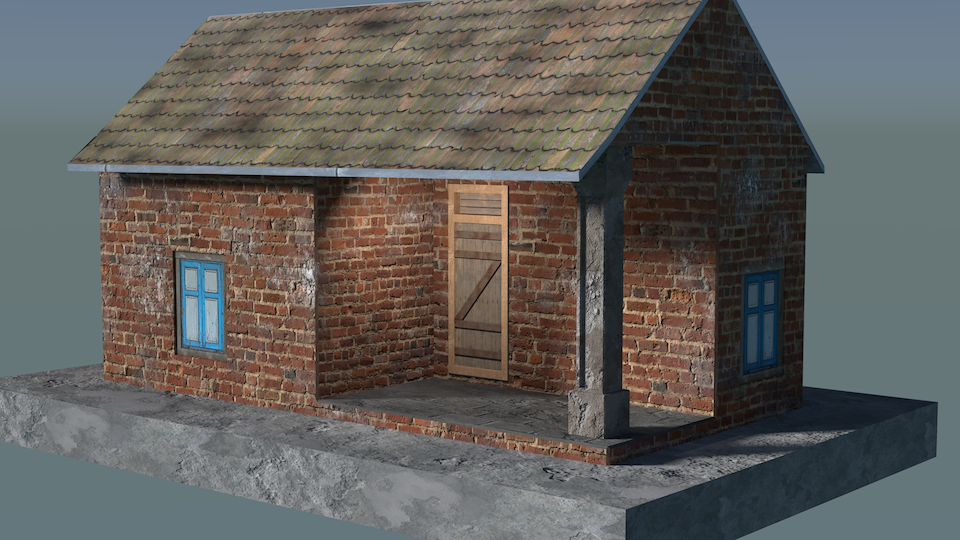

I modelled this house by seeing some medieval period reference images of Tamil Nadu. Texture has been picked from CG textures. I have just applied the window texture to the windows so it’s not a mesh.
Date04/02/019
Date04/02/019
 Front View Top View
Top View